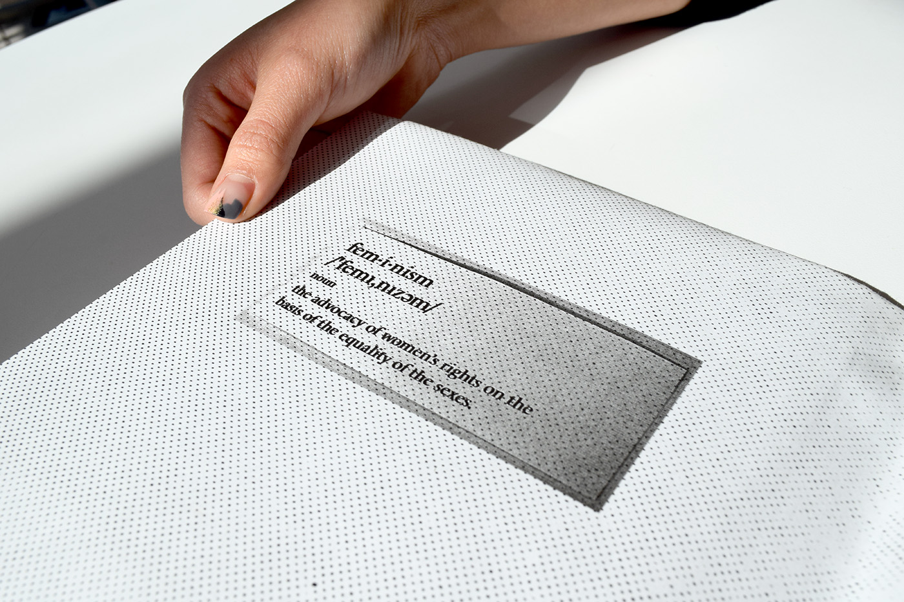
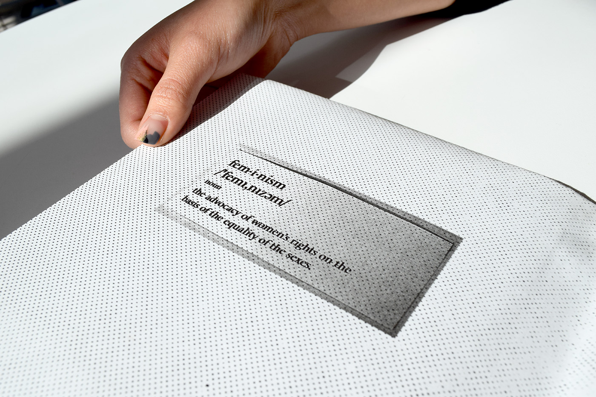
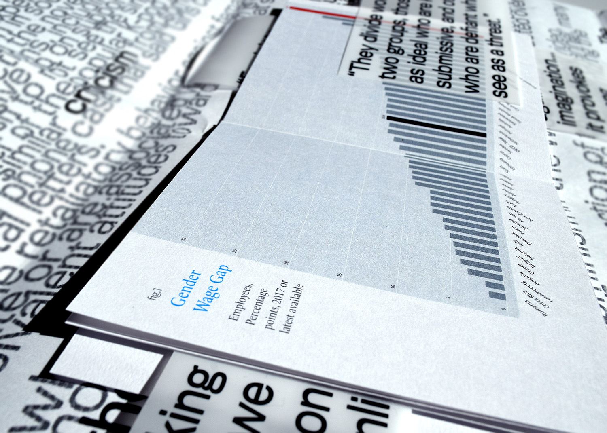
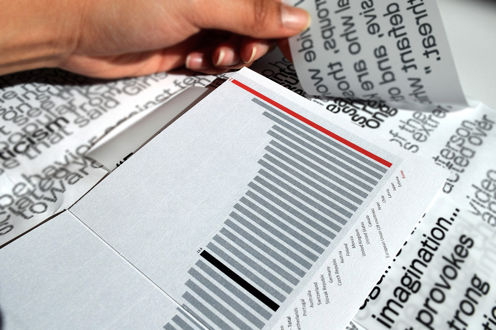
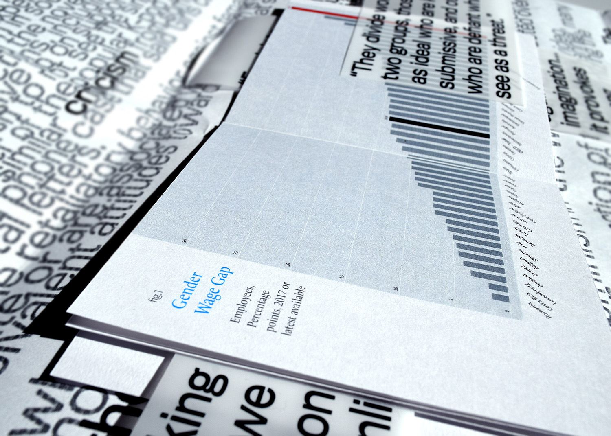
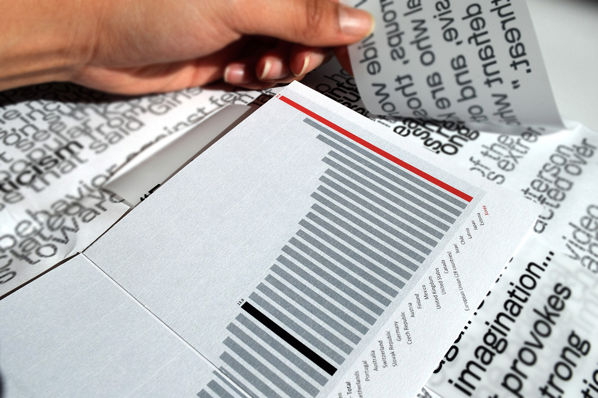
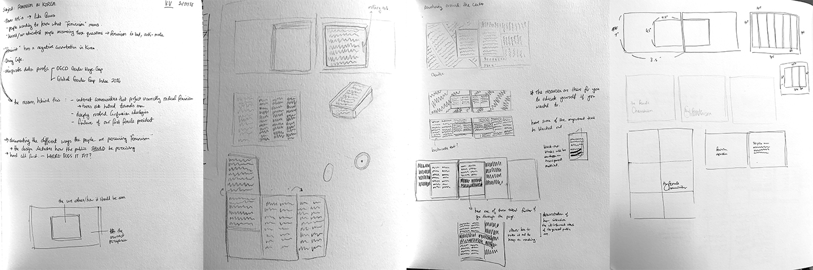
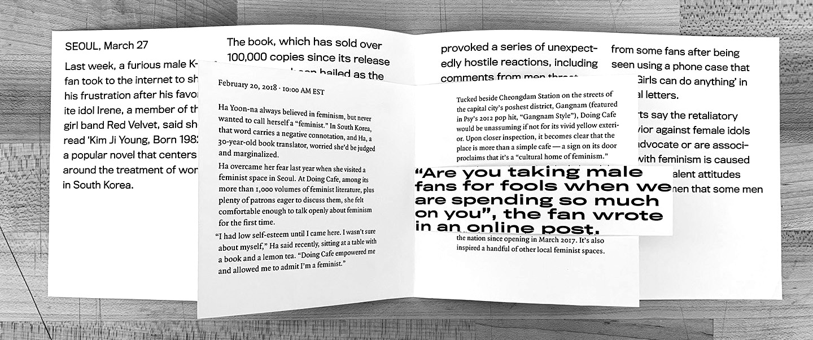
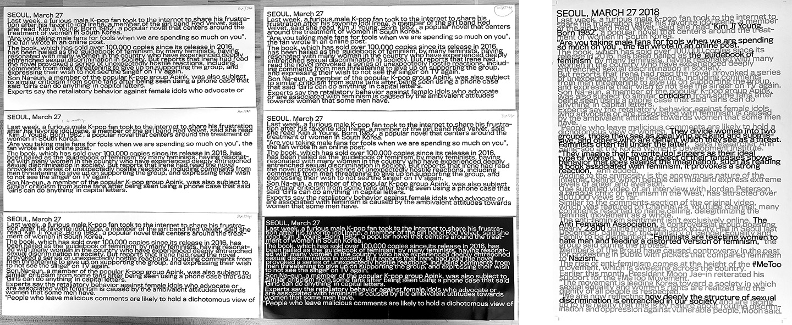
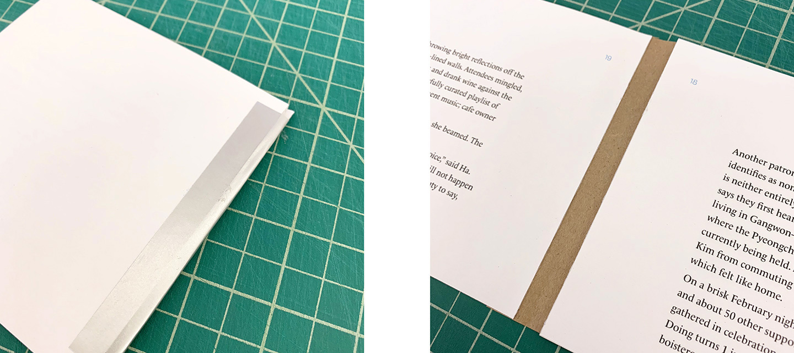

the female chauvinism
2018
the female chauvinism is an editorial design that incorporates two different stances on a single subject matter that I’ve had interest in for a while — feminism in Korea. I designed the piece so that it overtly highlights my stance on the chosen issue.
I started out by giving myself a broad topic of "feminism in Korea." As the research progressed, I was able to narrow down my focus to a specific incident where a member of a popular K-Pop girl group talked about how she had read a book that narrates what it is like to be living in Korea as a woman, and her male fans got extremely furious that she was projecting herself as a feminist. This reaction was common in that feminism is quite a new movement to Korea. The article that was used in response to this incident was about a feminist cafe in Seoul, showing how there are resources giving the truth available if one takes the time to educate onself on the true intentions of feminism.
 

 




See the full inner book below.
PROCESS
From Concept To Form
At first, I wanted to have a book that has a cut-out in the middle, where the core article would exist in a form that can be scrolled up and down with a wheel on the side. However, given that the school’s laser cutter was broken and the timeline for the project wasn’t long, I decided to go with the form of a book within a book.
 Type As Image
However, as I furthered the refinement process, I realized that it made both articles intrusive to one another in a way that I did not want them to be. So I found the solution to be producing them as a book within a poster. Below are some experimentation with font size and leading to portray type as noise for the poster form, as well as projecting noise through type using bitmap.
I wanted to have the second article visually create a lot of noise because it demonstrates how the general public in Korea perceives feminism as hatred towards men, without even bothering to educate themselves on the subject matter. So conceptually, what the article shows is actually loud noise that brushes upon the surface of the actual meaning, obstructing the path to the real meaning. I portrayed these through large scale and chaotic type form. In contrast, I designed a small book for the first article, placing it at the center of the poster (the format for the second article)—by doing so, I hoped to com- municate with my audience that the resources to the true meaning exists at the heart of the subject matter, if one is willing to go through the process of diving deep in research to educate oneself.
Prototyping With Material
I played around with the material for the spine of the small book at the core of the poster. In the end, I perfect-bound the book to be mounted on the poster.
Adobe InDesign and Adobe Photoshop were used to create this project.